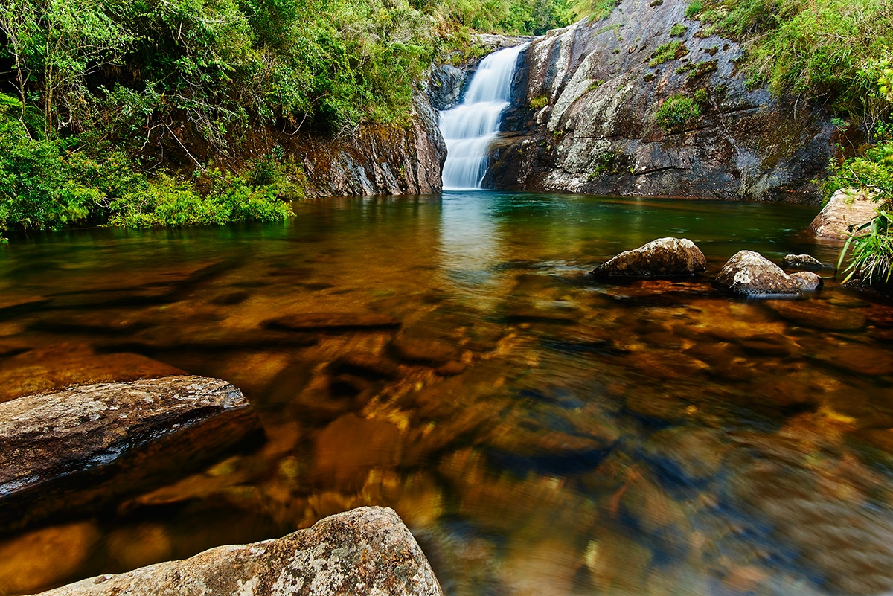
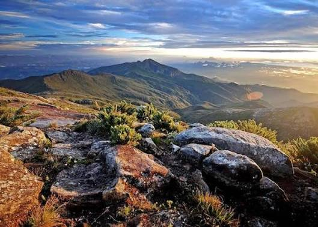
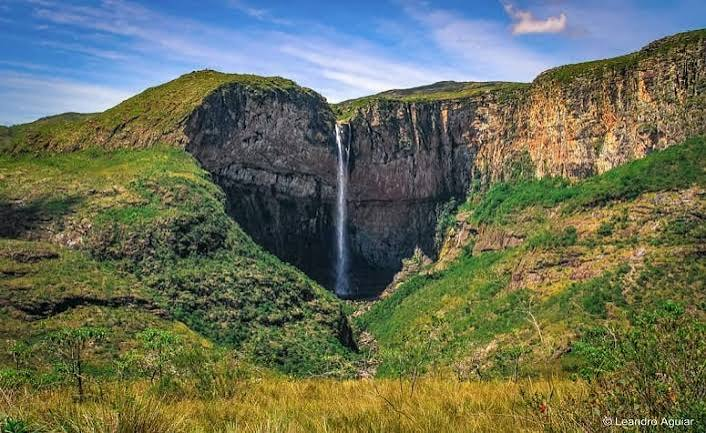

Guia de Trilhas de Minas Gerais
Minas tem Serra, cachoeira e caminho para todo tipo de trilheiro.
Um catálogo com distância, dificuldade e pontos de interesse de cada trilha.
 PÉ NA SERRA
PÉ NA SERRA
Guia de Trilhas de Minas Gerais
Um catálogo com distância, dificuldade e pontos de interesse de cada trilha.
Uma Seleção para começar, das mais tranquilas ás que pedem preparo.

São Roque de Minas - Serra da Canastra

Alto Caparaó - Serra do Caparaó

Conceição do Mato Dentro - Serra do Cipó
Cada região de minas tem um tipo de trilha diferente para oferecer.
Três passos entre a vontade de sair de casa e o pé na trilha.
Filtre trilhas por região, distância e dificuldade ate achar a que combina com o seu preparo.
Veja os pontos de interesse no caminho — cachoeira, mirante, gruta — e o que levar pra cada um.
Duração estimada, nível de dificuldade e acesso: informação pra decidir com a cabeça, não só com a foto.